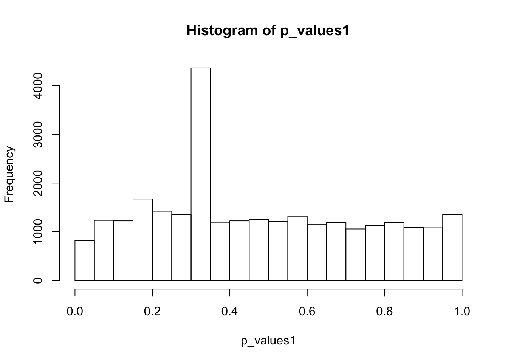
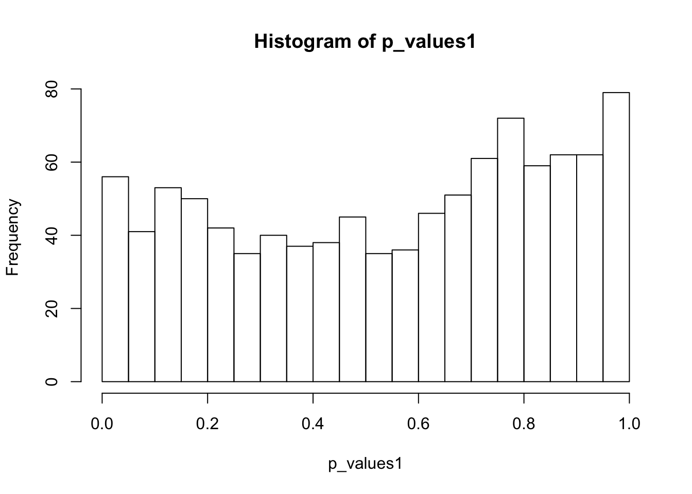
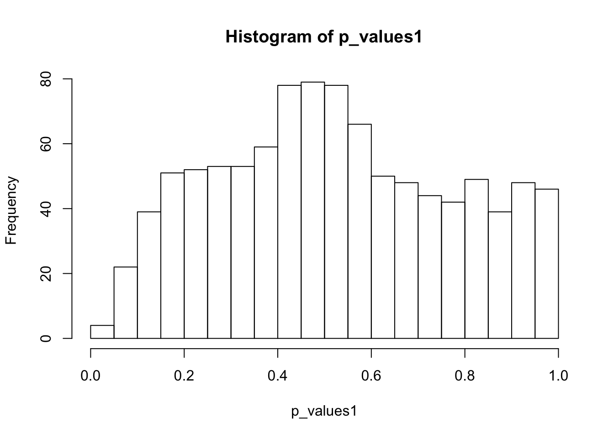
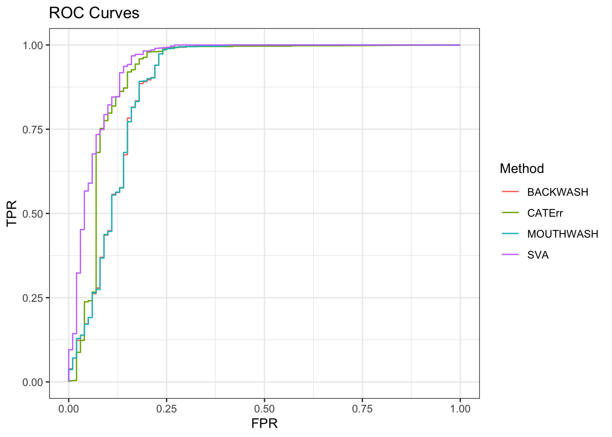

Single cell differential expression analysis
Dongyue Xie
2019-12-27
Last updated: 2020-01-06
Checks: 7 0
Knit directory: misc/
This reproducible R Markdown analysis was created with workflowr (version 1.5.0). The Checks tab describes the reproducibility checks that were applied when the results were created. The Past versions tab lists the development history.
Great! Since the R Markdown file has been committed to the Git repository, you know the exact version of the code that produced these results.
Great job! The global environment was empty. Objects defined in the global environment can affect the analysis in your R Markdown file in unknown ways. For reproduciblity it’s best to always run the code in an empty environment.
The command set.seed(20191122) was run prior to running the code in the R Markdown file. Setting a seed ensures that any results that rely on randomness, e.g. subsampling or permutations, are reproducible.
Great job! Recording the operating system, R version, and package versions is critical for reproducibility.
Nice! There were no cached chunks for this analysis, so you can be confident that you successfully produced the results during this run.
Great job! Using relative paths to the files within your workflowr project makes it easier to run your code on other machines.
Great! You are using Git for version control. Tracking code development and connecting the code version to the results is critical for reproducibility. The version displayed above was the version of the Git repository at the time these results were generated.
Note that you need to be careful to ensure that all relevant files for the analysis have been committed to Git prior to generating the results (you can use wflow_publish or wflow_git_commit). workflowr only checks the R Markdown file, but you know if there are other scripts or data files that it depends on. Below is the status of the Git repository when the results were generated:
Ignored files:
Ignored: .Rhistory
Ignored: .Rproj.user/
Ignored: analysis/figure/
Untracked files:
Untracked: analysis/MAST.Rmd
Untracked: analysis/ruv4.Rmd
Note that any generated files, e.g. HTML, png, CSS, etc., are not included in this status report because it is ok for generated content to have uncommitted changes.
These are the previous versions of the R Markdown and HTML files. If you’ve configured a remote Git repository (see ?wflow_git_remote), click on the hyperlinks in the table below to view them.
| File | Version | Author | Date | Message |
|---|---|---|---|---|
| Rmd | fb35a52 | Dongyue Xie | 2020-01-06 | wflow_publish(“analysis/scde.Rmd”) |
Introduction
Two review papers on single cell differential expression analysis I found: Wang et al, and Sonenson and Robinson.
One review paper on RNA-seq bulk data differential expression analysis: Sonenson and Delorenzi.
Single cell RNA seq datasets: conquer
What are UMI data sets?, Full length vs UMI
The data object contains: TPM, counts, length-scaled TPMs, the average length of the transcripts expressed in each sample for each gene.
Task:
- Whether we need to RUV? Apply some single cell DE method like MAST, D3E, scDD, SCDE, DEsngle etc, maybe also try methods for RNA seq data like edgeR, Deseq2, voomlimma.
– in paper Sonenson and Robinson(2018), the did an experiment on null datasets and found that for unfiltered data sets, many methods struggled to correctly control the type I error.
If need to RUV, how does current methods like SVA and MOUTHWASH work?
If current method does not work, why? How to improve?
For this GSE45719 datasets: mouse, total 291 cells, among which 50 cells are 16-cell stage blastomere and 50 cells are Mid blastocyst cell (92-94h post-fertilization).
To create NULL datasets, we can use only 16-cell stage cells and randomly partition the cells into two groups.
NULL sc-dataset DE
library(ggplot2)
suppressPackageStartupMessages(library(SummarizedExperiment))
suppressPackageStartupMessages(library(MultiAssayExperiment))
datax<- readRDS("~/Downloads/GSE45719.rds")
datax_gene = experiments(datax)[["gene"]]
head(assays(datax_gene)[["count"]]) GSM1112490 GSM1112491 GSM1112492 GSM1112493
ENSMUSG00000000001.4 2178.0000 1111.000 654.000 91
ENSMUSG00000000003.15 0.0000 0.000 0.000 0
ENSMUSG00000000028.14 350.9997 1191.996 3001.005 1074
ENSMUSG00000000031.15 0.0000 0.000 0.000 0
ENSMUSG00000000037.16 32.0000 0.000 0.000 0
ENSMUSG00000000049.11 0.0000 0.000 0.000 0
GSM1112494 GSM1112495 GSM1112496 GSM1112497
ENSMUSG00000000001.4 1589.000 1033.0000 2154 2874.0000
ENSMUSG00000000003.15 0.000 0.0000 0 0.0000
ENSMUSG00000000028.14 1738.003 999.9997 516 311.0005
ENSMUSG00000000031.15 0.000 0.0000 0 0.0000
ENSMUSG00000000037.16 0.000 0.0000 0 2.0000
ENSMUSG00000000049.11 328.000 0.0000 0 0.0000
GSM1112498 GSM1112499 GSM1112500 GSM1112501
ENSMUSG00000000001.4 2642.000 206 601.0000 1991
ENSMUSG00000000003.15 0.000 0 0.0000 0
ENSMUSG00000000028.14 2767.997 3350 300.9997 736
ENSMUSG00000000031.15 0.000 0 0.0000 0
ENSMUSG00000000037.16 0.000 0 0.0000 0
ENSMUSG00000000049.11 0.000 0 0.0000 0
GSM1112502 GSM1112503 GSM1112504 GSM1112505
ENSMUSG00000000001.4 762 399 115 0
ENSMUSG00000000003.15 0 0 0 0
ENSMUSG00000000028.14 1024 1903 1246 299
ENSMUSG00000000031.15 0 0 0 0
ENSMUSG00000000037.16 0 0 0 0
ENSMUSG00000000049.11 0 16 146 0
GSM1112506 GSM1112507 GSM1112508 GSM1112509
ENSMUSG00000000001.4 0 0 960 1445
ENSMUSG00000000003.15 0 0 0 0
ENSMUSG00000000028.14 276 0 624 0
ENSMUSG00000000031.15 0 0 0 0
ENSMUSG00000000037.16 0 0 0 0
ENSMUSG00000000049.11 0 0 0 0
GSM1112510 GSM1112511 GSM1112512 GSM1112513
ENSMUSG00000000001.4 794 141.000 917.00000 305.0000
ENSMUSG00000000003.15 0 0.000 0.00000 0.0000
ENSMUSG00000000028.14 1 1837.001 1255.00000 535.0005
ENSMUSG00000000031.15 0 0.000 0.00000 0.0000
ENSMUSG00000000037.16 0 0.000 14.00002 0.0000
ENSMUSG00000000049.11 0 0.000 0.00000 0.0000
GSM1112514 GSM1112515 GSM1112516 GSM1112517
ENSMUSG00000000001.4 1330 1092.0000 2519 1693.0000
ENSMUSG00000000003.15 0 0.0000 0 0.0000
ENSMUSG00000000028.14 9 582.0004 2930 607.0003
ENSMUSG00000000031.15 0 0.0000 0 0.0000
ENSMUSG00000000037.16 0 0.0000 0 0.0000
ENSMUSG00000000049.11 0 0.0000 0 0.0000
GSM1112518 GSM1112519 GSM1112520 GSM1112521
ENSMUSG00000000001.4 3398 2859.000 723.0000 1413.0000
ENSMUSG00000000003.15 0 0.000 0.0000 0.0000
ENSMUSG00000000028.14 790 1994.002 821.0004 978.0002
ENSMUSG00000000031.15 0 0.000 0.0000 0.0000
ENSMUSG00000000037.16 0 0.000 0.0000 0.0000
ENSMUSG00000000049.11 0 0.000 0.0000 0.0000
GSM1112522 GSM1112523 GSM1112524 GSM1112525
ENSMUSG00000000001.4 0 1722 513 422.000
ENSMUSG00000000003.15 0 0 0 0.000
ENSMUSG00000000028.14 0 2860 1028 1893.002
ENSMUSG00000000031.15 0 0 0 0.000
ENSMUSG00000000037.16 0 0 0 0.000
ENSMUSG00000000049.11 0 0 0 0.000
GSM1112526 GSM1112527 GSM1112528 GSM1112529
ENSMUSG00000000001.4 2434 2546 1861.000 687
ENSMUSG00000000003.15 0 0 0.000 0
ENSMUSG00000000028.14 40 834 2688.005 648
ENSMUSG00000000031.15 0 0 0.000 0
ENSMUSG00000000037.16 0 0 0.000 0
ENSMUSG00000000049.11 0 0 0.000 0
GSM1112530 GSM1112531 GSM1112532 GSM1112533
ENSMUSG00000000001.4 1210.000000 526 449 500.000
ENSMUSG00000000003.15 0.000000 0 0 0.000
ENSMUSG00000000028.14 12.000000 1071 567 2886.003
ENSMUSG00000000031.15 0.000000 0 0 0.000
ENSMUSG00000000037.16 1.999997 0 0 0.000
ENSMUSG00000000049.11 0.000000 0 0 0.000
GSM1112534 GSM1112535 GSM1112536 GSM1112537
ENSMUSG00000000001.4 378 46 288 139
ENSMUSG00000000003.15 0 0 0 0
ENSMUSG00000000028.14 1527 8013 1804 327
ENSMUSG00000000031.15 0 0 0 0
ENSMUSG00000000037.16 0 0 382 0
ENSMUSG00000000049.11 0 0 0 0
GSM1112538 GSM1112539 GSM1112540 GSM1112541
ENSMUSG00000000001.4 500.000 439 953.000 1832
ENSMUSG00000000003.15 0.000 0 0.000 0
ENSMUSG00000000028.14 683.792 24 8900.003 6589
ENSMUSG00000000031.15 0.000 0 0.000 0
ENSMUSG00000000037.16 0.000 0 0.000 0
ENSMUSG00000000049.11 0.000 0 0.000 0
GSM1112542 GSM1112543 GSM1112544 GSM1112545
ENSMUSG00000000001.4 1131.00000 668.000000 503.0000 316.000
ENSMUSG00000000003.15 0.00000 0.000000 0.0000 0.000
ENSMUSG00000000028.14 2973.99800 4329.000000 2523.9960 2762.003
ENSMUSG00000000031.15 0.00000 0.000000 0.0000 0.000
ENSMUSG00000000037.16 19.99999 1.999995 482.0003 153.000
ENSMUSG00000000049.11 0.00000 0.000000 9.0000 137.000
GSM1112546 GSM1112547 GSM1112548 GSM1112549
ENSMUSG00000000001.4 1200.0000 1071.000 2108 340.000000
ENSMUSG00000000003.15 0.0000 0.000 0 0.000000
ENSMUSG00000000028.14 3851.0030 5071.005 5161 7362.000000
ENSMUSG00000000031.15 0.0000 0.000 0 0.000000
ENSMUSG00000000037.16 343.0004 1.000 48 2.000002
ENSMUSG00000000049.11 315.0000 0.000 0 81.000000
GSM1112550 GSM1112551 GSM1112552 GSM1112553
ENSMUSG00000000001.4 78.000 993 922.000 771.000
ENSMUSG00000000003.15 0.000 0 0.000 0.000
ENSMUSG00000000028.14 3672.996 1069 2585.997 4305.004
ENSMUSG00000000031.15 0.000 0 0.000 0.000
ENSMUSG00000000037.16 1.000 67 8.000 6.000
ENSMUSG00000000049.11 0.000 0 0.000 3.000
GSM1112554 GSM1112555 GSM1112556 GSM1112557
ENSMUSG00000000001.4 459.0000000 1071.000000 17 102
ENSMUSG00000000003.15 0.0000000 0.000000 0 0
ENSMUSG00000000028.14 407.0004700 2023.003000 96 85
ENSMUSG00000000031.15 0.0000000 0.000000 0 0
ENSMUSG00000000037.16 0.9999997 2.000001 0 0
ENSMUSG00000000049.11 0.0000000 0.000000 0 0
GSM1112558 GSM1112559 GSM1112560 GSM1112561
ENSMUSG00000000001.4 1442 839 1515.0000 487.000
ENSMUSG00000000003.15 0 0 0.0000 0.000
ENSMUSG00000000028.14 1379 1205 940.0003 5124.996
ENSMUSG00000000031.15 0 0 0.0000 0.000
ENSMUSG00000000037.16 0 0 0.0000 417.000
ENSMUSG00000000049.11 0 0 0.0000 0.000
GSM1112562 GSM1112563 GSM1112564 GSM1112565
ENSMUSG00000000001.4 1792.000 2320.00000 1619.000 34
ENSMUSG00000000003.15 0.000 0.00000 0.000 0
ENSMUSG00000000028.14 1118.999 846.00000 1413.004 1245
ENSMUSG00000000031.15 0.000 0.00000 0.000 0
ENSMUSG00000000037.16 0.000 0.00000 0.000 0
ENSMUSG00000000049.11 0.000 35.99995 0.000 0
GSM1112566 GSM1112567 GSM1112568 GSM1112569
ENSMUSG00000000001.4 587.000 9.000 1848 3478.000
ENSMUSG00000000003.15 0.000 0.000 0 0.000
ENSMUSG00000000028.14 2254.996 1344.002 2937 1828.004
ENSMUSG00000000031.15 0.000 0.000 0 0.000
ENSMUSG00000000037.16 1.000 0.000 0 0.000
ENSMUSG00000000049.11 0.000 0.000 0 0.000
GSM1112570 GSM1112571 GSM1112572 GSM1112573
ENSMUSG00000000001.4 2464.000 1193 440 794
ENSMUSG00000000003.15 0.000 0 0 0
ENSMUSG00000000028.14 2582.004 1247 947 350
ENSMUSG00000000031.15 0.000 0 0 0
ENSMUSG00000000037.16 0.000 0 0 0
ENSMUSG00000000049.11 0.000 0 0 0
GSM1112574 GSM1112575 GSM1112576 GSM1112577
ENSMUSG00000000001.4 486 2030 1039.000 2651.0000
ENSMUSG00000000003.15 0 0 0.000 0.0000
ENSMUSG00000000028.14 821 774 2288.999 2355.0030
ENSMUSG00000000031.15 0 0 0.000 0.0000
ENSMUSG00000000037.16 0 0 0.000 139.9999
ENSMUSG00000000049.11 14 0 320.000 1.0000
GSM1112578 GSM1112579 GSM1112580 GSM1112581
ENSMUSG00000000001.4 1320 488 1256.000 510
ENSMUSG00000000003.15 0 0 0.000 0
ENSMUSG00000000028.14 949 596 2125.001 347
ENSMUSG00000000031.15 0 0 0.000 0
ENSMUSG00000000037.16 0 0 0.000 0
ENSMUSG00000000049.11 0 36 0.000 0
GSM1112590 GSM1112591 GSM1112592 GSM1112593
ENSMUSG00000000001.4 0 645 18 0
ENSMUSG00000000003.15 0 0 0 0
ENSMUSG00000000028.14 0 0 0 0
ENSMUSG00000000031.15 0 0 0 0
ENSMUSG00000000037.16 0 0 0 0
ENSMUSG00000000049.11 4185 16703 9696 9259
GSM1112594 GSM1112595 GSM1112596 GSM1112597
ENSMUSG00000000001.4 1 2767.000 2484.000 2775.000
ENSMUSG00000000003.15 0 0.000 0.000 0.000
ENSMUSG00000000028.14 0 2749.998 2827.002 2499.999
ENSMUSG00000000031.15 0 0.000 0.000 0.000
ENSMUSG00000000037.16 0 3712.995 3422.993 3687.002
ENSMUSG00000000049.11 2147 0.000 0.000 0.000
GSM1112598 GSM1112599 GSM1112600 GSM1112601
ENSMUSG00000000001.4 3064.000 3148.000 2078.000 3155.000
ENSMUSG00000000003.15 0.000 0.000 0.000 0.000
ENSMUSG00000000028.14 1774.002 2513.998 2054.997 1080.000
ENSMUSG00000000031.15 0.000 0.000 0.000 0.000
ENSMUSG00000000037.16 3889.000 3934.000 3085.999 3178.007
ENSMUSG00000000049.11 0.000 0.000 0.000 0.000
GSM1112602 GSM1112603 GSM1112604 GSM1112605
ENSMUSG00000000001.4 2631.0000 2052.0000 3016.000 2152.0000
ENSMUSG00000000003.15 0.0000 0.0000 0.000 0.0000
ENSMUSG00000000028.14 801.9999 581.9995 985.000 746.0004
ENSMUSG00000000031.15 0.0000 1.0000 0.000 0.0000
ENSMUSG00000000037.16 2304.9966 539.9999 1454.999 809.0000
ENSMUSG00000000049.11 0.0000 0.0000 2.000 0.0000
GSM1112606 GSM1112607 GSM1112608 GSM1112609
ENSMUSG00000000001.4 3069 2794.000 4003.000 2600.000
ENSMUSG00000000003.15 0 0.000 0.000 0.000
ENSMUSG00000000028.14 1632 2608.997 3261.989 2093.004
ENSMUSG00000000031.15 0 0.000 0.000 0.000
ENSMUSG00000000037.16 1031 1283.000 1489.001 1204.001
ENSMUSG00000000049.11 0 0.000 0.000 0.000
GSM1112610 GSM1112611 GSM1112612 GSM1112613
ENSMUSG00000000001.4 5720.000 2421 3871 4233.000
ENSMUSG00000000003.15 0.000 0 0 0.000
ENSMUSG00000000028.14 2922.007 1732 97 2761.004
ENSMUSG00000000031.15 0.000 0 0 0.000
ENSMUSG00000000037.16 1599.004 0 0 0.000
ENSMUSG00000000049.11 0.000 0 0 0.000
GSM1112614 GSM1112615 GSM1112616 GSM1112617
ENSMUSG00000000001.4 5.00000 4521 3337 557.000
ENSMUSG00000000003.15 0.00000 0 0 0.000
ENSMUSG00000000028.14 23.99997 33 2926 1476.005
ENSMUSG00000000031.15 0.00000 0 0 0.000
ENSMUSG00000000037.16 0.00000 0 0 0.000
ENSMUSG00000000049.11 0.00000 0 0 0.000
GSM1112618 GSM1112619 GSM1112620 GSM1112621
ENSMUSG00000000001.4 1636.0000 846 1373.000 3813
ENSMUSG00000000003.15 0.0000 0 0.000 0
ENSMUSG00000000028.14 607.0003 1245 2071.815 3729
ENSMUSG00000000031.15 0.0000 0 0.000 0
ENSMUSG00000000037.16 0.0000 0 0.000 0
ENSMUSG00000000049.11 0.0000 0 0.000 0
GSM1112622 GSM1112623 GSM1112624 GSM1112625
ENSMUSG00000000001.4 1428.000 1689 4079.000 32
ENSMUSG00000000003.15 0.000 0 0.000 0
ENSMUSG00000000028.14 1811.003 1356 1920.005 3883
ENSMUSG00000000031.15 0.000 0 0.000 0
ENSMUSG00000000037.16 0.000 0 0.000 0
ENSMUSG00000000049.11 0.000 0 0.000 0
GSM1112626 GSM1112627 GSM1112628 GSM1112629
ENSMUSG00000000001.4 2107 11.0000 812 703
ENSMUSG00000000003.15 0 0.0000 0 0
ENSMUSG00000000028.14 1333 469.0005 1042 2395
ENSMUSG00000000031.15 0 0.0000 0 0
ENSMUSG00000000037.16 0 0.0000 0 0
ENSMUSG00000000049.11 0 0.0000 0 0
GSM1112630 GSM1112631 GSM1112632 GSM1112633
ENSMUSG00000000001.4 1822.000 1825 75.000 1228.0000
ENSMUSG00000000003.15 0.000 0 0.000 0.0000
ENSMUSG00000000028.14 1577.999 776 2064.999 303.0001
ENSMUSG00000000031.15 0.000 0 0.000 0.0000
ENSMUSG00000000037.16 0.000 0 0.000 0.0000
ENSMUSG00000000049.11 0.000 0 0.000 0.0000
GSM1112634 GSM1112635 GSM1112636 GSM1112637
ENSMUSG00000000001.4 1552.0000 874.0000 1359 1284
ENSMUSG00000000003.15 0.0000 0.0000 0 0
ENSMUSG00000000028.14 643.0001 130.0005 1400 984
ENSMUSG00000000031.15 0.0000 0.0000 0 0
ENSMUSG00000000037.16 0.0000 0.0000 0 0
ENSMUSG00000000049.11 0.0000 0.0000 0 0
GSM1112638 GSM1112639 GSM1112640 GSM1112641
ENSMUSG00000000001.4 922 394 1681 1638
ENSMUSG00000000003.15 0 0 0 0
ENSMUSG00000000028.14 0 7 191 2
ENSMUSG00000000031.15 0 0 0 0
ENSMUSG00000000037.16 0 0 0 0
ENSMUSG00000000049.11 0 0 0 0
GSM1112642 GSM1112643 GSM1112644 GSM1112645
ENSMUSG00000000001.4 2145 1655 555 875
ENSMUSG00000000003.15 0 0 0 0
ENSMUSG00000000028.14 2708 39 618 1453
ENSMUSG00000000031.15 0 0 0 0
ENSMUSG00000000037.16 0 0 0 0
ENSMUSG00000000049.11 0 0 0 0
GSM1112646 GSM1112647 GSM1112648 GSM1112649
ENSMUSG00000000001.4 4651.000 708.0000 22.000 1234
ENSMUSG00000000003.15 0.000 0.0000 0.000 0
ENSMUSG00000000028.14 2016.999 175.0005 2331.998 833
ENSMUSG00000000031.15 0.000 0.0000 0.000 0
ENSMUSG00000000037.16 0.000 0.0000 0.000 0
ENSMUSG00000000049.11 0.000 0.0000 0.000 0
GSM1112650 GSM1112651 GSM1112652 GSM1112653
ENSMUSG00000000001.4 0 3545 1805 1206
ENSMUSG00000000003.15 0 0 0 0
ENSMUSG00000000028.14 29 1114 1249 987
ENSMUSG00000000031.15 0 0 0 0
ENSMUSG00000000037.16 0 0 0 0
ENSMUSG00000000049.11 0 0 0 0
GSM1112654 GSM1112655 GSM1112656 GSM1112657
ENSMUSG00000000001.4 1310.000 5238.000 8580.0000 4957.00
ENSMUSG00000000003.15 0.000 0.000 0.0000 0.00
ENSMUSG00000000028.14 10776.690 19212.955 26761.9700 22267.97
ENSMUSG00000000031.15 3147.001 0.000 0.0000 0.00
ENSMUSG00000000037.16 1511.996 1181.004 290.0005 1179.00
ENSMUSG00000000049.11 0.000 0.000 46.0000 0.00
GSM1112658 GSM1112659 GSM1112660 GSM1112661
ENSMUSG00000000001.4 2943.000 4275.000 7631.00 1051.0000
ENSMUSG00000000003.15 0.000 0.000 0.00 0.0000
ENSMUSG00000000028.14 7678.996 20073.037 14125.03 12857.0000
ENSMUSG00000000031.15 0.000 0.000 0.00 0.0000
ENSMUSG00000000037.16 768.000 1492.004 3442.00 934.0003
ENSMUSG00000000049.11 120.000 0.000 9.00 1.0000
GSM1112662 GSM1112663 GSM1112664 GSM1112665
ENSMUSG00000000001.4 3526.000 5134.000 1073 882
ENSMUSG00000000003.15 0.000 0.000 0 0
ENSMUSG00000000028.14 24224.990 15175.000 1265 517
ENSMUSG00000000031.15 0.000 2700.999 0 0
ENSMUSG00000000037.16 2121.997 2425.998 0 0
ENSMUSG00000000049.11 0.000 0.000 0 0
GSM1112666 GSM1112667 GSM1112668 GSM1112669
ENSMUSG00000000001.4 2435 1127.00000 1912.00000 1031.0000
ENSMUSG00000000003.15 0 0.00000 0.00000 0.0000
ENSMUSG00000000028.14 0 23.00004 25.00004 225.9999
ENSMUSG00000000031.15 0 0.00000 0.00000 0.0000
ENSMUSG00000000037.16 0 0.00000 0.00000 0.0000
ENSMUSG00000000049.11 0 0.00000 0.00000 0.0000
GSM1112670 GSM1112671 GSM1112672 GSM1112673
ENSMUSG00000000001.4 468 53.000 1214 296.0000
ENSMUSG00000000003.15 0 0.000 0 0.0000
ENSMUSG00000000028.14 78 1488.001 1514 380.9999
ENSMUSG00000000031.15 0 0.000 0 0.0000
ENSMUSG00000000037.16 0 0.000 0 0.0000
ENSMUSG00000000049.11 0 0.000 0 0.0000
GSM1112674 GSM1112675 GSM1112676 GSM1112677
ENSMUSG00000000001.4 539.000 2580.00000 773.0000 65
ENSMUSG00000000003.15 0.000 0.00000 0.0000 0
ENSMUSG00000000028.14 1629.001 16.99997 251.0004 0
ENSMUSG00000000031.15 0.000 0.00000 0.0000 0
ENSMUSG00000000037.16 0.000 0.00000 0.0000 0
ENSMUSG00000000049.11 0.000 0.00000 0.0000 0
GSM1112678 GSM1112679 GSM1112680 GSM1112681
ENSMUSG00000000001.4 2509 297 1353 3147
ENSMUSG00000000003.15 0 0 0 0
ENSMUSG00000000028.14 0 124 777 1315
ENSMUSG00000000031.15 0 0 0 0
ENSMUSG00000000037.16 0 0 0 0
ENSMUSG00000000049.11 0 0 33 0
GSM1112682 GSM1112683 GSM1112684 GSM1112685
ENSMUSG00000000001.4 2191 805 1295 1788
ENSMUSG00000000003.15 0 0 0 0
ENSMUSG00000000028.14 484 692 838 573
ENSMUSG00000000031.15 0 0 0 0
ENSMUSG00000000037.16 0 0 0 0
ENSMUSG00000000049.11 0 0 0 0
GSM1112686 GSM1112687 GSM1112688 GSM1112689
ENSMUSG00000000001.4 787.000 4292 1054 4614
ENSMUSG00000000003.15 0.000 0 0 0
ENSMUSG00000000028.14 1288.004 8 848 5100
ENSMUSG00000000031.15 0.000 0 0 0
ENSMUSG00000000037.16 0.000 0 0 0
ENSMUSG00000000049.11 0.000 0 0 0
GSM1112690 GSM1112691 GSM1112692 GSM1112693
ENSMUSG00000000001.4 12 2704 2762 1887
ENSMUSG00000000003.15 0 0 0 0
ENSMUSG00000000028.14 395 4691 1592 630
ENSMUSG00000000031.15 0 0 0 0
ENSMUSG00000000037.16 0 0 0 0
ENSMUSG00000000049.11 0 0 0 0
GSM1112694 GSM1112695 GSM1112696 GSM1112697
ENSMUSG00000000001.4 362.0000 62.0000 17.0000 522.000
ENSMUSG00000000003.15 0.0000 0.0000 0.0000 0.000
ENSMUSG00000000028.14 1186.0000 955.0000 836.9998 972.934
ENSMUSG00000000031.15 0.0000 0.0000 0.0000 0.000
ENSMUSG00000000037.16 230.0004 703.9997 815.9999 1641.002
ENSMUSG00000000049.11 0.0000 0.0000 0.0000 0.000
GSM1112698 GSM1112699 GSM1112700 GSM1112701
ENSMUSG00000000001.4 864.00000 734.0000 144 100.0000
ENSMUSG00000000003.15 0.00000 0.0000 0 0.0000
ENSMUSG00000000028.14 882.00000 2061.9960 603 752.0002
ENSMUSG00000000031.15 0.00000 0.0000 0 0.0000
ENSMUSG00000000037.16 61.00005 432.0004 150 159.9996
ENSMUSG00000000049.11 9.00000 0.0000 0 0.0000
GSM1112702 GSM1112703 GSM1112704 GSM1112705
ENSMUSG00000000001.4 55.0000 92.0000 38.0000 91.0000
ENSMUSG00000000003.15 0.0000 0.0000 0.0000 0.0000
ENSMUSG00000000028.14 1087.7650 963.5002 568.9995 1247.0040
ENSMUSG00000000031.15 0.0000 0.0000 0.0000 0.0000
ENSMUSG00000000037.16 480.9997 271.0000 303.0002 541.9998
ENSMUSG00000000049.11 0.0000 0.0000 0.0000 10.0000
GSM1112706 GSM1112707 GSM1112708 GSM1112709
ENSMUSG00000000001.4 970 1253.0000 2065.0000 1666
ENSMUSG00000000003.15 0 0.0000 0.0000 0
ENSMUSG00000000028.14 5 714.0005 699.0004 1221
ENSMUSG00000000031.15 0 0.0000 0.0000 0
ENSMUSG00000000037.16 0 0.0000 0.0000 0
ENSMUSG00000000049.11 0 3.0000 0.0000 0
GSM1112710 GSM1112711 GSM1112712 GSM1112713
ENSMUSG00000000001.4 2985.000 2481 1154 872.000000
ENSMUSG00000000003.15 0.000 0 0 0.000000
ENSMUSG00000000028.14 2107.999 1335 810 427.000000
ENSMUSG00000000031.15 0.000 0 0 0.000000
ENSMUSG00000000037.16 0.000 0 0 5.000005
ENSMUSG00000000049.11 0.000 0 0 0.000000
GSM1112714 GSM1112715 GSM1112716 GSM1112717
ENSMUSG00000000001.4 1030.0000 34.000 0 1579
ENSMUSG00000000003.15 0.0000 0.000 0 0
ENSMUSG00000000028.14 1310.0000 170.000 910 12
ENSMUSG00000000031.15 0.0000 0.000 0 0
ENSMUSG00000000037.16 119.0002 2445.995 0 0
ENSMUSG00000000049.11 0.0000 0.000 0 0
GSM1112718 GSM1112719 GSM1112720 GSM1112721
ENSMUSG00000000001.4 167.000 323 2034 134.000
ENSMUSG00000000003.15 0.000 0 0 0.000
ENSMUSG00000000028.14 1607.003 0 2828 2254.002
ENSMUSG00000000031.15 0.000 0 0 0.000
ENSMUSG00000000037.16 0.000 0 0 0.000
ENSMUSG00000000049.11 0.000 0 0 0.000
GSM1112722 GSM1112723 GSM1112724 GSM1112725
ENSMUSG00000000001.4 3245.000 8 64 7
ENSMUSG00000000003.15 0.000 0 0 0
ENSMUSG00000000028.14 1449.995 550 3340 2342
ENSMUSG00000000031.15 0.000 0 0 0
ENSMUSG00000000037.16 0.000 0 0 0
ENSMUSG00000000049.11 0.000 0 0 0
GSM1112726 GSM1112727 GSM1112728 GSM1112729
ENSMUSG00000000001.4 1739 762 939 766
ENSMUSG00000000003.15 0 0 0 0
ENSMUSG00000000028.14 802 101 979 862
ENSMUSG00000000031.15 0 0 0 0
ENSMUSG00000000037.16 0 0 1 0
ENSMUSG00000000049.11 0 0 0 0
GSM1112730 GSM1112731 GSM1112732 GSM1112733
ENSMUSG00000000001.4 944 1588 486.000 626.0000
ENSMUSG00000000003.15 0 0 0.000 0.0000
ENSMUSG00000000028.14 1387 570 1596.997 125.9998
ENSMUSG00000000031.15 0 0 0.000 0.0000
ENSMUSG00000000037.16 160 0 0.000 0.0000
ENSMUSG00000000049.11 0 0 0.000 0.0000
GSM1112734 GSM1112735 GSM1112736 GSM1112737
ENSMUSG00000000001.4 193 3515 1750 1406
ENSMUSG00000000003.15 0 0 0 0
ENSMUSG00000000028.14 1927 3793 113 2895
ENSMUSG00000000031.15 0 0 0 0
ENSMUSG00000000037.16 1 0 0 0
ENSMUSG00000000049.11 0 0 0 0
GSM1112738 GSM1112739 GSM1112740 GSM1112741
ENSMUSG00000000001.4 632 1120 2248 601
ENSMUSG00000000003.15 0 0 0 0
ENSMUSG00000000028.14 1039 2047 2850 1371
ENSMUSG00000000031.15 0 1 0 0
ENSMUSG00000000037.16 1 0 0 0
ENSMUSG00000000049.11 0 0 0 15
GSM1112742 GSM1112743 GSM1112744 GSM1112745
ENSMUSG00000000001.4 1830.000 376 362.00000 506
ENSMUSG00000000003.15 0.000 0 0.00000 0
ENSMUSG00000000028.14 1575.996 362 331.00000 223
ENSMUSG00000000031.15 0.000 0 0.00000 0
ENSMUSG00000000037.16 0.000 0 47.99999 0
ENSMUSG00000000049.11 0.000 7 0.00000 0
GSM1112746 GSM1112747 GSM1112748 GSM1112749
ENSMUSG00000000001.4 30 1170 391 3335
ENSMUSG00000000003.15 0 0 0 0
ENSMUSG00000000028.14 79 1171 0 4
ENSMUSG00000000031.15 0 0 0 0
ENSMUSG00000000037.16 0 0 0 0
ENSMUSG00000000049.11 0 0 0 0
GSM1112750 GSM1112751 GSM1112752 GSM1112753
ENSMUSG00000000001.4 328.0000 4470.000 2097.0000 1859
ENSMUSG00000000003.15 0.0000 0.000 0.0000 0
ENSMUSG00000000028.14 437.9997 1360.996 593.9998 1
ENSMUSG00000000031.15 0.0000 0.000 0.0000 0
ENSMUSG00000000037.16 0.0000 0.000 0.0000 0
ENSMUSG00000000049.11 0.0000 0.000 0.0000 0
GSM1112754 GSM1112755 GSM1112756 GSM1112757
ENSMUSG00000000001.4 2 3088.0000 423.000000 2267
ENSMUSG00000000003.15 0 0.0000 0.000000 0
ENSMUSG00000000028.14 60 283.9999 1.999996 738
ENSMUSG00000000031.15 0 0.0000 0.000000 0
ENSMUSG00000000037.16 0 0.0000 0.000000 0
ENSMUSG00000000049.11 0 0.0000 0.000000 0
GSM1112758 GSM1112759 GSM1112760 GSM1112761
ENSMUSG00000000001.4 2863 1658.0000 1377 1173
ENSMUSG00000000003.15 0 0.0000 0 0
ENSMUSG00000000028.14 2058 676.0005 947 2977
ENSMUSG00000000031.15 0 0.0000 0 0
ENSMUSG00000000037.16 0 0.0000 0 0
ENSMUSG00000000049.11 0 0.0000 0 0
GSM1112762 GSM1112763 GSM1112764 GSM1112765
ENSMUSG00000000001.4 2031.000 3001 2445 540
ENSMUSG00000000003.15 0.000 0 0 0
ENSMUSG00000000028.14 1903.001 347 767 13
ENSMUSG00000000031.15 0.000 0 0 0
ENSMUSG00000000037.16 0.000 0 0 0
ENSMUSG00000000049.11 0.000 0 0 0
GSM1112766 GSM1112767 GSM1112768 GSM1112769
ENSMUSG00000000001.4 4087.000 4795.000 5989.000 3332.000
ENSMUSG00000000003.15 0.000 0.000 0.000 0.000
ENSMUSG00000000028.14 4074.001 2612.997 1901.999 1587.998
ENSMUSG00000000031.15 0.000 0.000 0.000 0.000
ENSMUSG00000000037.16 1733.999 2261.001 2185.000 1156.000
ENSMUSG00000000049.11 0.000 0.000 0.000 0.000
GSM1278017 GSM1278018 GSM1278019 GSM1278020
ENSMUSG00000000001.4 763 578 1663 286
ENSMUSG00000000003.15 0 0 0 0
ENSMUSG00000000028.14 825 625 582 452
ENSMUSG00000000031.15 0 0 0 0
ENSMUSG00000000037.16 0 0 0 0
ENSMUSG00000000049.11 0 0 0 0
GSM1278021 GSM1278022 GSM1278023 GSM1278024
ENSMUSG00000000001.4 600 232 532 1471
ENSMUSG00000000003.15 0 0 0 0
ENSMUSG00000000028.14 859 803 720 641
ENSMUSG00000000031.15 0 0 0 0
ENSMUSG00000000037.16 0 0 0 0
ENSMUSG00000000049.11 0 0 0 0
GSM1278025 GSM1278036 GSM1278037 GSM1278038
ENSMUSG00000000001.4 876 1329 3065 1832
ENSMUSG00000000003.15 0 0 0 0
ENSMUSG00000000028.14 722 0 3 212
ENSMUSG00000000031.15 0 0 0 0
ENSMUSG00000000037.16 0 0 0 0
ENSMUSG00000000049.11 0 0 0 0
GSM1278039 GSM1278040 GSM1278041 GSM1278042
ENSMUSG00000000001.4 6864 4112 5833.000 5332.0000
ENSMUSG00000000003.15 0 0 0.000 0.0000
ENSMUSG00000000028.14 21 0 2075.003 513.0003
ENSMUSG00000000031.15 0 0 0.000 0.0000
ENSMUSG00000000037.16 0 0 0.000 0.0000
ENSMUSG00000000049.11 0 723 0.000 0.0000
GSM1278043 GSM1278044 GSM1278045
ENSMUSG00000000001.4 1473 3889 2872
ENSMUSG00000000003.15 0 0 0
ENSMUSG00000000028.14 476 1683 0
ENSMUSG00000000031.15 0 0 124
ENSMUSG00000000037.16 0 0 0
ENSMUSG00000000049.11 0 0 0cell16_idx = 1:50
cell16_readcounts = (assays(datax_gene)[["count"]])[,1:50]
#filter out genes that are not expressed
cell16_reads = cell16_readcounts[rowSums(cell16_readcounts)!=0,]
cell16=cell16_reads
dim(cell16)[1] 27517 50sum(cell16==0)/prod(dim(cell16))[1] 0.5125835#
# task 1
# randomly partition the data into 2 groups, then simply use a two sample t test
# first partition
set.seed(12345)
group1_idx = sample(1:ncol(cell16),ncol(cell16)/2)
group1 = cell16[,group1_idx]
group2 = cell16[,-group1_idx]
## for each gene, run a two-sample t test
p_values1 = c()
for(i in 1:nrow(cell16)){
p_values1[i] = t.test(group1[i,],group2[i,],alternative='two.sided')$p.value
}
hist(p_values1,breaks = 15)
summary(p_values1) Min. 1st Qu. Median Mean 3rd Qu. Max.
0.0003378 0.2663421 0.3651364 0.4512739 0.6531414 1.0000000 A lot of p-values are around 0.3-0.35. Take a look at gene 12:
as.numeric(cell16[12,group1_idx]) [1] 0 0 0 0 0 0 0 1 0 0 0 0 0 0 0 0 0 0 0 0 0 0 0 0 0as.numeric(cell16[12,-group1_idx]) [1] 0 0 0 0 0 0 0 0 0 0 0 0 0 0 0 0 0 0 0 0 0 0 0 0 0t.test(cell16[12,group1_idx],cell16[12,-group1_idx],alternative = 'two.sided')$p.value[1] 0.3272869Only one cell has non-zero read counts among two groups. To apply two-sample t-test, we should try to avoid this situation. So choose the top 1000 expressed genes:
#Choose the top 1000 expressed genes
top_expressed_genes = (order(rowSums(cell16_reads),decreasing = TRUE))[1:1000]
cell16 = cell16_reads[top_expressed_genes,]
dim(cell16)[1] 1000 50sum(cell16==0)/prod(dim(cell16))[1] 0.00876#
# task 1
# randomly partition the data into 2 groups, then simply use a two sample t test
# first partition
set.seed(12345)
group1_idx = sample(1:ncol(cell16),ncol(cell16)/2)
group1 = cell16[,group1_idx]
group2 = cell16[,-group1_idx]
## for each gene, run a two-sample t test
p_values1 = c()
for(i in 1:nrow(cell16)){
p_values1[i] = t.test(group1[i,],group2[i,],alternative='two.sided')$p.value
}
ks.test(p_values1,'punif',0,1)
One-sample Kolmogorov-Smirnov test
data: p_values1
D = 0.090775, p-value = 1.392e-07
alternative hypothesis: two-sidedhist(p_values1,breaks = 15)# second partition
group1_idx = sample(1:ncol(cell16),ncol(cell16)/2)
group1 = cell16[,group1_idx]
group2 = cell16[,-group1_idx]
## for each gene, run a two-sample t test
p_values1 = c()
for(i in 1:nrow(cell16)){
p_values1[i] = t.test(group1[i,],group2[i,],alternative='two.sided')$p.value
}
ks.test(p_values1,'punif',0,1)
One-sample Kolmogorov-Smirnov test
data: p_values1
D = 0.24902, p-value < 2.2e-16
alternative hypothesis: two-sidedhist(p_values1,breaks = 15)
# third partition
group1_idx = sample(1:ncol(cell16),ncol(cell16)/2)
group1 = cell16[,group1_idx]
group2 = cell16[,-group1_idx]
## for each gene, run a two-sample t test
p_values1 = c()
for(i in 1:nrow(cell16)){
p_values1[i] = t.test(group1[i,],group2[i,],alternative='two.sided')$p.value
}
ks.test(p_values1,'punif',0,1)
One-sample Kolmogorov-Smirnov test
data: p_values1
D = 0.044142, p-value = 0.0406
alternative hypothesis: two-sidedhist(p_values1,breaks = 15)
Summary - NULL
If not accounting for 0’s in scData, then the null distribution of p-values is certainly not uniform. Mainly because two-sample t test is not applicable.
If removing genes with two many 0’s, then the p-value distributions deviate from uniform.
RUV methods for RNA-seq
First apply on NULL data then add signals to genes using Poisson thinning.
library(vicar)
set.seed(12345)
group1_idx = sample(1:ncol(cell16),ncol(cell16)/2)
group1 = cell16[,group1_idx]
group2 = cell16[,-group1_idx]
group_indicator = rep(0,ncol(cell16))
group_indicator[group1_idx] = 1
X = model.matrix(~group_indicator)
Y = t(cell16)
num_sv <- sva::num.sv(dat = t(Y), mod = X, method = "be")
num_sv_l <- sva::num.sv(dat = t(Y), mod = X, method = "leek")
num_sv[1] 4num_sv_l[1] 48Two approaches give very different number of surrogate variables! Try to use 4 SVs in the following analysis.
mout = mouthwash(Y,X,k=num_sv,cov_of_interest = 2,include_intercept = FALSE)Running mouthwash on 50 x 2 matrix X and 50 x 1000 matrix Y.
- Computing independent basis using QR decomposition.
- Computation took 0.017 seconds.
- Running additional preprocessing steps.
- Computation took 0 seconds.
- Running second step of mouthwash:
+ Estimating model parameters using EM.
+ Computation took 2.627 seconds.
+ Generating adaptive shrinkage (ash) output.
+ Computation took 0.199 seconds.
- Second step took 3.638 seconds.
- Estimating additional hidden confounders.
- Computation took 0.015 seconds.mout$pi0[1] 0.9922996library(cate)
#library(leapp)
cate_cate <- cate::cate.fit(X.primary = X[, 2, drop = FALSE], X.nuis = X[, -2, drop = FALSE],
Y = Y, r = num_sv, adj.method = "rr")
# this method is vey slow!
#leapp_leapp <- leapp::leapp(data = t(Y), pred.prim = X[, 2, drop = FALSE],
# pred.covar = X[, -2, drop = FALSE], num.fac = num_sv)
sva_sva <- sva::sva(dat = t(Y), mod = X, mod0 = X[, -2, drop = FALSE], n.sv = num_sv)Number of significant surrogate variables is: 4
Iteration (out of 5 ):1 2 3 4 5 X.sva <- cbind(X, sva_sva$sv)
lmout <- limma::lmFit(object = t(Y), design = X.sva)
eout <- limma::eBayes(lmout)
svaout <- list()
svaout$betahat <- lmout$coefficients[, 2]
svaout$sebetahat <- lmout$stdev.unscaled[, 2] * sqrt(eout$s2.post)
svaout$pvalues <- eout$p.value[, 2]
hist(svaout$pvalues,breaks=15)
ks.test(svaout$pvalues,'punif',0,1)
One-sample Kolmogorov-Smirnov test
data: svaout$pvalues
D = 0.032173, p-value = 0.2518
alternative hypothesis: two-sidedhist(cate_cate$beta.p.value,breaks = 15)
ks.test(cate_cate$beta.p.value,'punif',0,1)
One-sample Kolmogorov-Smirnov test
data: cate_cate$beta.p.value
D = 0.085223, p-value = 9.83e-07
alternative hypothesis: two-sidedAdd some signal to the NULL dataset.
library(seqgendiff)
#tt = thin_diff(round(cell16), design_fixed = X[,2,drop=FALSE])
set.seed(12345)
thinout = thin_2group(round(cell16),0.9,signal_fun = stats::rexp,signal_params = list(rate=0.5))
#check null groups
group1 = cell16[,which(thinout$designmat==1)]
group2 = cell16[,which(thinout$designmat==0)]
## for each gene, run a two-sample t test
p_values1 = c()
for(i in 1:nrow(cell16)){
p_values1[i] = t.test(group1[i,],group2[i,],alternative='two.sided')$p.value
}
ks.test(p_values1,'punif',0,1)
One-sample Kolmogorov-Smirnov test
data: p_values1
D = 0.1421, p-value < 2.2e-16
alternative hypothesis: two-sidedhist(p_values1,breaks = 15)Y = t(thinout$mat)
X = model.matrix(~thinout$designmat)
num_sv <- sva::num.sv(dat = t(Y), mod = X, method = "be")
num_sv_l <- sva::num.sv(dat = t(Y), mod = X, method = "leek")
num_sv[1] 4num_sv_l[1] 48mean(abs(thinout$coef) < 10^-6)[1] 0.9mout = mouthwash(Y,X,k=num_sv,cov_of_interest = 2,include_intercept = FALSE)Running mouthwash on 50 x 2 matrix X and 50 x 1000 matrix Y.
- Computing independent basis using QR decomposition.
- Computation took 0.015 seconds.
- Running additional preprocessing steps.
- Computation took 0 seconds.
- Running second step of mouthwash:
+ Estimating model parameters using EM.
+ Computation took 2.245 seconds.
+ Generating adaptive shrinkage (ash) output.
+ Computation took 0.107 seconds.
- Second step took 3.137 seconds.
- Estimating additional hidden confounders.
- Computation took 0.019 seconds.mout$pi0[1] 0.806857bout <- backwash(Y = Y, X = X, k = num_sv, cov_of_interest = 2, include_intercept = FALSE) - Computing independent basis using QR decomposition.
- Computation took 0.015 seconds.
- Running additional preprocessing steps.
- Computation took 0 seconds.
- Running second step of backwash:
+ Initializing parameters for EM algorithm.
+ Computation took 0.19 seconds.
+ Running one round of parameter updates.
+ Computation took 0.03 seconds.
+ Estimating model parameters using EM.
+ Computation took 9.111 seconds.
+ Generating posterior statistics.
+ Computation took 0.002 seconds.
- Second step took 10.908 seconds.
- Generating final backwash outputs.
- Computation took 0.013 seconds.bout$pi0[1] 0.8127092cate_cate = cate::cate.fit(X.primary = X[, 2, drop = FALSE], X.nuis = X[, -2, drop = FALSE],
Y = Y, r = num_sv, adj.method = "rr")
sva_sva <- sva::sva(dat = t(Y), mod = X, mod0 = X[, -2, drop = FALSE], n.sv = num_sv)Number of significant surrogate variables is: 4
Iteration (out of 5 ):1 2 3 4 5 X.sva <- cbind(X, sva_sva$sv)
lmout <- limma::lmFit(object = t(Y), design = X.sva)
eout <- limma::eBayes(lmout)
svaout <- list()
svaout$betahat <- lmout$coefficients[, 2]
svaout$sebetahat <- lmout$stdev.unscaled[, 2] * sqrt(eout$s2.post)
svaout$pvalues <- eout$p.value[, 2]
which_null = c(1*(abs(thinout$coef) < 10^-6))
# plot ROC curve
roc_out <- list(
pROC::roc(response = which_null, predictor = c(mout$result$lfdr)),
pROC::roc(response = which_null, predictor = c(bout$result$lfdr)),
pROC::roc(response = which_null, predictor = c(cate_cate$beta.p.value)),
pROC::roc(response = which_null, predictor = c(svaout$pvalues)))
name_vec <- c("MOUTHWASH", 'BACKWASH',"CATErr", "SVA")
names(roc_out) <- name_vec
sout <- lapply(roc_out, function(x) { data.frame(TPR = x$sensitivities, FPR = 1 - x$specificities)})
for (index in 1:length(sout)) {
sout[[index]]$Method <- name_vec[index]
}
longdat <- do.call(rbind, sout)
shortdat <- dplyr::filter(longdat, Method == "MOUTHWASH" | Method == "BACKWASH" |
Method == "CATErr" | Method == "SVA" | Method == "LEAPP")
ggplot(data = shortdat, mapping = aes(x = FPR, y = TPR, col = Method)) +
geom_path() + theme_bw() + ggtitle("ROC Curves")auc_vec <- sapply(roc_out, FUN = function(x) { x$auc })
knitr::kable(sort(auc_vec, decreasing = TRUE), col.names = "AUC", digits = 3)| AUC | |
|---|---|
| SVA | 0.943 |
| CATErr | 0.918 |
| BACKWASH | 0.887 |
| MOUTHWASH | 0.887 |
# estimate pi0
method_list <- list()
method_list$CATErr <- list()
method_list$CATErr$betahat <- c(cate_cate$beta)
method_list$CATErr$sebetahat <- c(sqrt(cate_cate$beta.cov.row * c(cate_cate$beta.cov.col)) / sqrt(nrow(X)))
method_list$SVA <- list()
method_list$SVA$betahat <- c(svaout$betahat)
method_list$SVA$sebetahat <- c(svaout$sebetahat)
ashfit <- lapply(method_list, FUN = function(x) { ashr::ash(x$betahat, x$sebetahat)})
api0 <- sapply(ashfit, FUN = ashr::get_pi0)
api0 <- c(api0, MOUTHWASH = mout$pi0)
api0 <- c(api0, BACKWASH = bout$pi0)
knitr::kable(sort(api0, decreasing = TRUE), col.names = "Estimate of Pi0")| Estimate of Pi0 | |
|---|---|
| BACKWASH | 0.8127092 |
| SVA | 0.8126893 |
| MOUTHWASH | 0.8068570 |
| CATErr | 0.4149302 |
Weaker signal: rexp(,rate=1)
set.seed(12345)
thinout = thin_2group(round(cell16),0.9,signal_fun = stats::rexp,signal_params = list(rate=1))
#check null groups
group1 = cell16[,which(thinout$designmat==1)]
group2 = cell16[,which(thinout$designmat==0)]
## for each gene, run a two-sample t test
p_values1 = c()
for(i in 1:nrow(cell16)){
p_values1[i] = t.test(group1[i,],group2[i,],alternative='two.sided')$p.value
}
ks.test(p_values1,'punif',0,1)
One-sample Kolmogorov-Smirnov test
data: p_values1
D = 0.1421, p-value < 2.2e-16
alternative hypothesis: two-sidedhist(p_values1,breaks = 15)Y = t(thinout$mat)
X = model.matrix(~thinout$designmat)
num_sv <- sva::num.sv(dat = t(Y), mod = X, method = "be")
num_sv_l <- sva::num.sv(dat = t(Y), mod = X, method = "leek")
num_sv[1] 4num_sv_l[1] 48mean(abs(thinout$coef) < 10^-6)[1] 0.9mout = mouthwash(Y,X,k=num_sv,cov_of_interest = 2,include_intercept = FALSE)Running mouthwash on 50 x 2 matrix X and 50 x 1000 matrix Y.
- Computing independent basis using QR decomposition.
- Computation took 0.011 seconds.
- Running additional preprocessing steps.
- Computation took 0.001 seconds.
- Running second step of mouthwash:
+ Estimating model parameters using EM.
+ Computation took 4.454 seconds.
+ Generating adaptive shrinkage (ash) output.
+ Computation took 0.109 seconds.
- Second step took 5.386 seconds.
- Estimating additional hidden confounders.
- Computation took 0.018 seconds.mout$pi0[1] 0.8120897bout <- backwash(Y = Y, X = X, k = num_sv, cov_of_interest = 2, include_intercept = FALSE) - Computing independent basis using QR decomposition.
- Computation took 0.015 seconds.
- Running additional preprocessing steps.
- Computation took 0 seconds.
- Running second step of backwash:
+ Initializing parameters for EM algorithm.
+ Computation took 0.168 seconds.
+ Running one round of parameter updates.
+ Computation took 0.031 seconds.
+ Estimating model parameters using EM.
+ Computation took 7.884 seconds.
+ Generating posterior statistics.
+ Computation took 0.004 seconds.
- Second step took 9.774 seconds.
- Generating final backwash outputs.
- Computation took 0.013 seconds.bout$pi0[1] 0.8210579cate_cate = cate::cate.fit(X.primary = X[, 2, drop = FALSE], X.nuis = X[, -2, drop = FALSE],
Y = Y, r = num_sv, adj.method = "rr")
sva_sva <- sva::sva(dat = t(Y), mod = X, mod0 = X[, -2, drop = FALSE], n.sv = num_sv)Number of significant surrogate variables is: 4
Iteration (out of 5 ):1 2 3 4 5 X.sva <- cbind(X, sva_sva$sv)
lmout <- limma::lmFit(object = t(Y), design = X.sva)
eout <- limma::eBayes(lmout)
svaout <- list()
svaout$betahat <- lmout$coefficients[, 2]
svaout$sebetahat <- lmout$stdev.unscaled[, 2] * sqrt(eout$s2.post)
svaout$pvalues <- eout$p.value[, 2]
which_null = c(1*(abs(thinout$coef) < 10^-6))
roc_out <- list(
pROC::roc(response = which_null, predictor = c(mout$result$lfdr)),
pROC::roc(response = which_null, predictor = c(bout$result$lfdr)),
pROC::roc(response = which_null, predictor = c(cate_cate$beta.p.value)),
pROC::roc(response = which_null, predictor = c(svaout$pvalues)))
name_vec <- c("MOUTHWASH", 'BACKWASH',"CATErr", "SVA")
names(roc_out) <- name_vec
sout <- lapply(roc_out, function(x) { data.frame(TPR = x$sensitivities, FPR = 1 - x$specificities)})
for (index in 1:length(sout)) {
sout[[index]]$Method <- name_vec[index]
}
longdat <- do.call(rbind, sout)
shortdat <- dplyr::filter(longdat, Method == "MOUTHWASH" | Method == "BACKWASH" |
Method == "CATErr" | Method == "SVA" | Method == "LEAPP")
ggplot(data = shortdat, mapping = aes(x = FPR, y = TPR, col = Method)) +
geom_path() + theme_bw() + ggtitle("ROC Curves")
auc_vec <- sapply(roc_out, FUN = function(x) { x$auc })
knitr::kable(sort(auc_vec, decreasing = TRUE), col.names = "AUC", digits = 3)| AUC | |
|---|---|
| SVA | 0.888 |
| CATErr | 0.859 |
| BACKWASH | 0.805 |
| MOUTHWASH | 0.805 |
method_list <- list()
method_list$CATErr <- list()
method_list$CATErr$betahat <- c(cate_cate$beta)
method_list$CATErr$sebetahat <- c(sqrt(cate_cate$beta.cov.row * c(cate_cate$beta.cov.col)) / sqrt(nrow(X)))
method_list$SVA <- list()
method_list$SVA$betahat <- c(svaout$betahat)
method_list$SVA$sebetahat <- c(svaout$sebetahat)
ashfit <- lapply(method_list, FUN = function(x) { ashr::ash(x$betahat, x$sebetahat)})
api0 <- sapply(ashfit, FUN = ashr::get_pi0)
api0 <- c(api0, MOUTHWASH = mout$pi0)
api0 <- c(api0, BACKWASH = bout$pi0)
knitr::kable(sort(api0, decreasing = TRUE), col.names = "Estimate of Pi0")| Estimate of Pi0 | |
|---|---|
| SVA | 0.8212793 |
| BACKWASH | 0.8210579 |
| MOUTHWASH | 0.8120897 |
| CATErr | 0.4781507 |
Stronger signal: rexp(,rate = 0.2)
set.seed(12345)
thinout = thin_2group(round(cell16),0.9,signal_fun = stats::rexp,signal_params = list(rate=0.2))
#check null groups
group1 = cell16[,which(thinout$designmat==1)]
group2 = cell16[,which(thinout$designmat==0)]
## for each gene, run a two-sample t test
p_values1 = c()
for(i in 1:nrow(cell16)){
p_values1[i] = t.test(group1[i,],group2[i,],alternative='two.sided')$p.value
}
ks.test(p_values1,'punif',0,1)
One-sample Kolmogorov-Smirnov test
data: p_values1
D = 0.1421, p-value < 2.2e-16
alternative hypothesis: two-sidedhist(p_values1,breaks = 15)Y = t(thinout$mat)
X = model.matrix(~thinout$designmat)
num_sv <- sva::num.sv(dat = t(Y), mod = X, method = "be")
num_sv_l <- sva::num.sv(dat = t(Y), mod = X, method = "leek")
num_sv[1] 4num_sv_l[1] 48mean(abs(thinout$coef) < 10^-6)[1] 0.9mout = mouthwash(Y,X,k=num_sv,cov_of_interest = 2,include_intercept = FALSE)Running mouthwash on 50 x 2 matrix X and 50 x 1000 matrix Y.
- Computing independent basis using QR decomposition.
- Computation took 0.014 seconds.
- Running additional preprocessing steps.
- Computation took 0 seconds.
- Running second step of mouthwash:
+ Estimating model parameters using EM.
+ Computation took 2.225 seconds.
+ Generating adaptive shrinkage (ash) output.
+ Computation took 0.104 seconds.
- Second step took 3.094 seconds.
- Estimating additional hidden confounders.
- Computation took 0.015 seconds.mout$pi0[1] 0.7596616bout <- backwash(Y = Y, X = X, k = num_sv, cov_of_interest = 2, include_intercept = FALSE) - Computing independent basis using QR decomposition.
- Computation took 0.013 seconds.
- Running additional preprocessing steps.
- Computation took 0 seconds.
- Running second step of backwash:
+ Initializing parameters for EM algorithm.
+ Computation took 0.186 seconds.
+ Running one round of parameter updates.
+ Computation took 0.027 seconds.
+ Estimating model parameters using EM.
+ Computation took 20.594 seconds.
+ Generating posterior statistics.
+ Computation took 0.003 seconds.
- Second step took 22.836 seconds.
- Generating final backwash outputs.
- Computation took 0.016 seconds.bout$pi0[1] 0.8159548cate_cate = cate::cate.fit(X.primary = X[, 2, drop = FALSE], X.nuis = X[, -2, drop = FALSE],
Y = Y, r = num_sv, adj.method = "rr")
sva_sva <- sva::sva(dat = t(Y), mod = X, mod0 = X[, -2, drop = FALSE], n.sv = num_sv)Number of significant surrogate variables is: 4
Iteration (out of 5 ):1 2 3 4 5 X.sva <- cbind(X, sva_sva$sv)
lmout <- limma::lmFit(object = t(Y), design = X.sva)
eout <- limma::eBayes(lmout)
svaout <- list()
svaout$betahat <- lmout$coefficients[, 2]
svaout$sebetahat <- lmout$stdev.unscaled[, 2] * sqrt(eout$s2.post)
svaout$pvalues <- eout$p.value[, 2]
which_null = c(1*(abs(thinout$coef) < 10^-6))
roc_out <- list(
pROC::roc(response = which_null, predictor = c(mout$result$lfdr)),
pROC::roc(response = which_null, predictor = c(bout$result$lfdr)),
pROC::roc(response = which_null, predictor = c(cate_cate$beta.p.value)),
pROC::roc(response = which_null, predictor = c(svaout$pvalues)))
name_vec <- c("MOUTHWASH", 'BACKWASH',"CATErr", "SVA")
names(roc_out) <- name_vec
sout <- lapply(roc_out, function(x) { data.frame(TPR = x$sensitivities, FPR = 1 - x$specificities)})
for (index in 1:length(sout)) {
sout[[index]]$Method <- name_vec[index]
}
longdat <- do.call(rbind, sout)
shortdat <- dplyr::filter(longdat, Method == "MOUTHWASH" | Method == "BACKWASH" |
Method == "CATErr" | Method == "SVA" | Method == "LEAPP")
ggplot(data = shortdat, mapping = aes(x = FPR, y = TPR, col = Method)) +
geom_path() + theme_bw() + ggtitle("ROC Curves")
auc_vec <- sapply(roc_out, FUN = function(x) { x$auc })
knitr::kable(sort(auc_vec, decreasing = TRUE), col.names = "AUC", digits = 3)| AUC | |
|---|---|
| SVA | 0.974 |
| MOUTHWASH | 0.953 |
| CATErr | 0.951 |
| BACKWASH | 0.950 |
method_list <- list()
method_list$CATErr <- list()
method_list$CATErr$betahat <- c(cate_cate$beta)
method_list$CATErr$sebetahat <- c(sqrt(cate_cate$beta.cov.row * c(cate_cate$beta.cov.col)) / sqrt(nrow(X)))
method_list$SVA <- list()
method_list$SVA$betahat <- c(svaout$betahat)
method_list$SVA$sebetahat <- c(svaout$sebetahat)
ashfit <- lapply(method_list, FUN = function(x) { ashr::ash(x$betahat, x$sebetahat)})
api0 <- sapply(ashfit, FUN = ashr::get_pi0)
api0 <- c(api0, MOUTHWASH = mout$pi0)
api0 <- c(api0, BACKWASH = bout$pi0)
knitr::kable(sort(api0, decreasing = TRUE), col.names = "Estimate of Pi0")| Estimate of Pi0 | |
|---|---|
| SVA | 0.8503571 |
| BACKWASH | 0.8159548 |
| MOUTHWASH | 0.7596616 |
| CATErr | 0.5565965 |
Summary - RUV
Applying SVA on NULL data gives uniformly distributed p-values. Cate with robust regression didn’t make p-values uniformly distributed but considerabley more small p-values. MOUTHWASH outputs \(\hat\pi_0\) very close to 1.
Adding signals to NULL dataset.
What i didnn’t look at: two many 0’s in the dataset.
sessionInfo()R version 3.6.1 (2019-07-05)
Platform: x86_64-apple-darwin15.6.0 (64-bit)
Running under: macOS High Sierra 10.13.6
Matrix products: default
BLAS: /Library/Frameworks/R.framework/Versions/3.6/Resources/lib/libRblas.0.dylib
LAPACK: /Library/Frameworks/R.framework/Versions/3.6/Resources/lib/libRlapack.dylib
locale:
[1] en_US.UTF-8/en_US.UTF-8/en_US.UTF-8/C/en_US.UTF-8/en_US.UTF-8
attached base packages:
[1] parallel stats4 stats graphics grDevices utils datasets
[8] methods base
other attached packages:
[1] seqgendiff_1.1.1 cate_1.1
[3] vicar_0.1-10 MultiAssayExperiment_1.10.4
[5] SummarizedExperiment_1.14.1 DelayedArray_0.10.0
[7] BiocParallel_1.18.1 matrixStats_0.55.0
[9] Biobase_2.44.0 GenomicRanges_1.36.1
[11] GenomeInfoDb_1.20.0 IRanges_2.18.3
[13] S4Vectors_0.22.1 BiocGenerics_0.30.0
[15] ggplot2_3.2.1
loaded via a namespace (and not attached):
[1] nlme_3.1-141 svd_0.5 bitops_1.0-6
[4] fs_1.3.1 bit64_0.9-7 doParallel_1.0.15
[7] rprojroot_1.3-2 tools_3.6.1 backports_1.1.5
[10] R6_2.4.0 DBI_1.0.0 lazyeval_0.2.2
[13] mgcv_1.8-29 colorspace_1.4-1 withr_2.1.2
[16] gridExtra_2.3 tidyselect_0.2.5 bit_1.1-14
[19] compiler_3.6.1 git2r_0.26.1 labeling_0.3
[22] scales_1.0.0 SQUAREM_2017.10-1 genefilter_1.66.0
[25] mixsqp_0.1-97 stringr_1.4.0 esaBcv_1.2.1
[28] digest_0.6.21 rmarkdown_1.16 XVector_0.24.0
[31] pscl_1.5.2 pkgconfig_2.0.3 htmltools_0.4.0
[34] highr_0.8 ruv_0.9.7.1 limma_3.40.6
[37] rlang_0.4.0 RSQLite_2.1.2 leapp_1.2
[40] dplyr_0.8.3 RCurl_1.95-4.12 magrittr_1.5
[43] GenomeInfoDbData_1.2.1 Matrix_1.2-17 Rcpp_1.0.2
[46] munsell_0.5.0 pROC_1.15.3 stringi_1.4.3
[49] whisker_0.4 yaml_2.2.0 MASS_7.3-51.4
[52] zlibbioc_1.30.0 plyr_1.8.4 grid_3.6.1
[55] blob_1.2.0 promises_1.1.0 crayon_1.3.4
[58] lattice_0.20-38 splines_3.6.1 annotate_1.62.0
[61] zeallot_0.1.0 knitr_1.25 pillar_1.4.2
[64] corpcor_1.6.9 codetools_0.2-16 XML_3.98-1.20
[67] glue_1.3.1 evaluate_0.14 vctrs_0.2.0
[70] httpuv_1.5.2 foreach_1.4.7 gtable_0.3.0
[73] purrr_0.3.2 assertthat_0.2.1 ashr_2.2-38
[76] xfun_0.10 xtable_1.8-4 later_1.0.0
[79] survival_2.44-1.1 truncnorm_1.0-8 tibble_2.1.3
[82] iterators_1.0.12 AnnotationDbi_1.46.1 memoise_1.1.0
[85] workflowr_1.5.0 sva_3.32.1